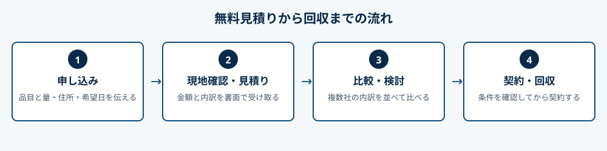

実家じまいや年末の片付けでは、タンスやベッド、家電といった大きな不用品が一度に出ます。自治体の粗大ごみでは運び出しが難しい場合に候補になるのが、不用品回収業者です。ただし回収の金額には決まった相場表がなく、同じ荷物でも業者によって見積りが変わります。この記事では、金額を断定するのではなく、無料見積りの取り方と比較のポイントを整理します。
無料見積りから回収までの流れ

1. 申し込みの前に、品目と量を書き出す
部屋ごとに「処分するもの」「残すもの」「迷っているもの」を分けておきます。見積りは品目と量で決まるため、この下準備があるかどうかで見積りの精度が変わります。写真を撮っておくと、電話やフォームでの申し込み時に状況を伝えやすくなります。
2. 現地確認のうえで、書面の見積りを受け取る
電話口の概算だけでは金額は確定しません。現地で荷物を確認してもらい、作業範囲と金額の内訳が書かれた見積書を受け取ります。口頭の金額だけで進めないことが、後の行き違いを防ぎます。
3. 複数社の内訳を並べて比べる
合計金額だけでなく、「搬出の作業費」「処分費」「車両費」といった内訳と、追加料金が発生する条件を並べて比べます。前提（品目と量）がそろっていないと比較にならないため、各社に同じ内容で頼むのがポイントです。
4. 条件を確認してから契約する
納得した1社と契約します。キャンセル条件と、作業当日に荷物が増えた場合の扱いを契約前に確認してください。見積りの段階では、どの社にも契約の約束をしないのが基本です。
見積りの前に確認したい点
無料見積りを取る前に確認する6項目
- 見積りが無料か、見積り後に契約しなくてもよいか（公式ページや申し込み画面で確認）
- 見積書に作業範囲と金額の内訳が書かれているか
- 追加料金が発生する条件が、契約前に書面で説明されるか
- 一般廃棄物の収集運搬について、自治体の許可を持つか、許可業者と提携しているか
- 買取できるものがある場合、査定方法と買取額の内訳が書面で出るか
- 契約書があり、キャンセル条件とキャンセル料の扱いが書かれているか
「許可」は見落としやすい点です。家庭から出る廃棄物の収集運搬は、市区町村の許可を受けた事業者が行う決まりです。許可のない事業者に渡した廃棄物が不法投棄されると、依頼した側が責任を問われる場合があります。遺品整理業者を選ぶときの確認点は遺品整理業者に頼む場合の記事にもまとめています。
自治体の粗大ごみと使い分ける
すべてを業者に頼む必要はありません。運び出せる小物や家電の一部は自治体の粗大ごみ回収へ、大きくて重い家具や、量が多くて期限がある分だけを業者へ、と分けると費用を抑えやすくなります。実家全体の進め方は実家じまいの進め方の記事を参照してください。
無料見積りの申し込み先
※この記事にはプロモーション（広告）が含まれます。紹介するサービスは、不用品回収の無料見積りを申し込める窓口です。対象エリア、見積り・回収の条件、料金は公式ページで確認してください。
不用品回収の無料見積りを申し込む（ぽいみつ）よくある質問
- 見積りは本当に無料ですか
- 無料見積りを掲げるサービスでも、対象エリアや条件によって扱いが異なる場合があります。申し込みの前に、見積りが無料であること、見積り後に契約しなくてもよいことを公式ページや申し込み画面で確認してください。この記事の末尾で紹介しているサービスも、条件は公式ページで確認のうえ申し込んでください。
- 見積りの当日にそのまま契約しないといけませんか
- その場で契約する必要はありません。見積書を受け取って家族と相談し、複数社の内訳を比べてから決めるのが基本です。即決を求められた場合は、その場で契約せず、書面の見積りだけを受け取って持ち帰ってください。
- 自治体の粗大ごみ回収と何が違いますか
- 自治体の粗大ごみは費用を抑えやすい一方、品目ごとに申し込みが必要で、指定日に自分で運び出す必要があります。不用品回収業者は家の中からの搬出まで任せられますが、その分費用は高くなります。量が少なく運び出せるものは自治体、量が多い・重い・期限がある場合は業者、と分けて考えるのが現実的です。
- 買取してもらえるものはありますか
- 家電、家具、着物、貴金属などは買取の対象になることがありますが、可否と金額は査定を受けてみないと分かりません。買取額を回収費から差し引く形の見積りでは、買取の内訳も書面で出してもらうと、後から確認ができます。